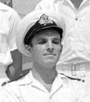
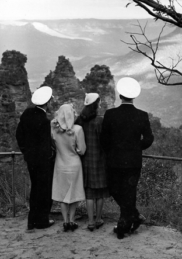
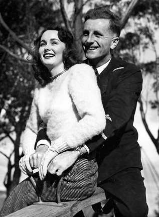
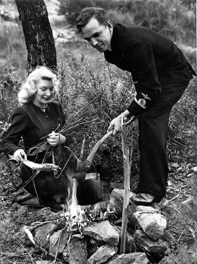
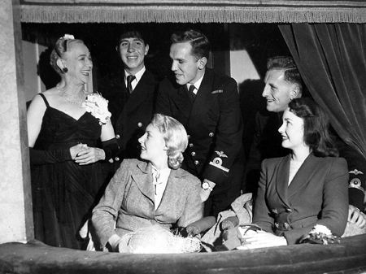
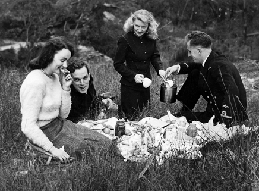
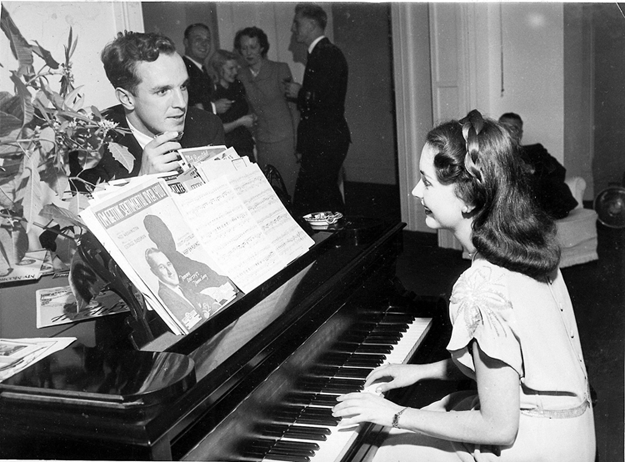
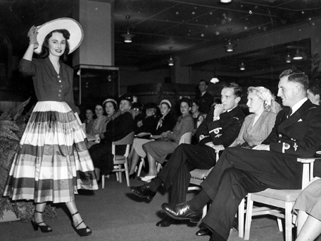

By D.L.G. (Jimmy) James

My account of some of the lighter side of our activities as portrayed in the Australian magazine 'PIX' on 6th September 1947.
|


 |
When the Royal Navy Squadron sailed from Brisbane last month after its Australian visit, men gave top marks to the Countries hospitality, girls, food, and scenery. In Sydney, well known models Caroline Kelly and Lorraine Croke entertained S/Lt Jimmy James and Tom Stride of HMS Theseus. Took them to the Blue Mountains, to theatres, restaurants, fashion parade, and Sydney homes. Australia is a bit of alright decided S/Lt's Jimmy James and Tom Stride of HMS Theseus, flagship of the Royal Navy squadron during the Australian visit. James is 22, comes from Plymouth and joined HMS Conway as a cadet in 1941. He broke his leg during the squadron's trip from Sydney to Brisbane when his plane crashed on the carrier's deck. Stride 21, lives at Salisbury, went into the Fleet Air Arm straight from school. His four brothers and sisters were all in various services during the war. Blonde Lorraine Croke and brunette Caroline Kelly showed the two young officers the sights in Sydney, and took them to the Blue Mountains for a Sunday picnic. Worst ordeal, the men said, was watching a fashion parade in a salon full of women. But it had its compensations as Caroline was one of the mannequins . The Navy retuned Sydney's hospitality with a ball on board HMS Glory, sister aircraft carrier of Theseus. The squadron is now in New Zealand and the men are feeling the effects of the welcome given them in this part of the world.
|



 |